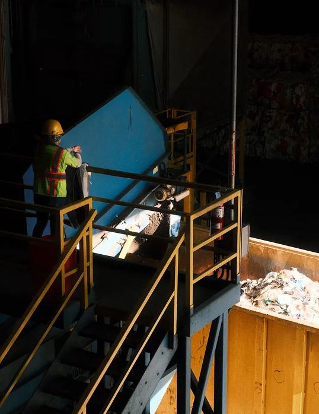
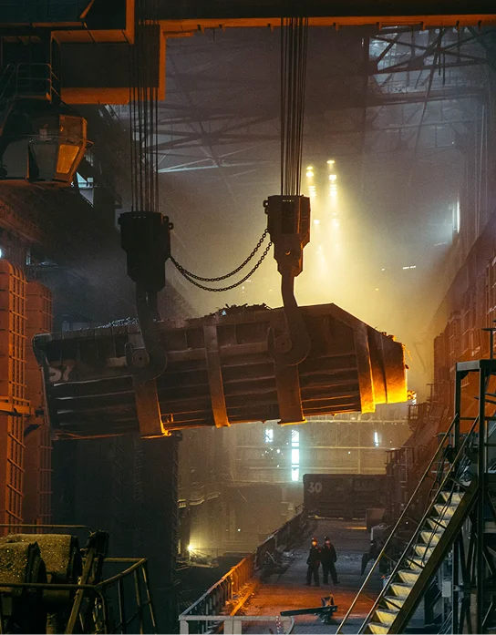

Industrial activity generates significant volumes of secondary materials, including mineral residues, industrial by-products, processing residues and legacy stockpiles. Some have limited commercial value in their existing form, but may contain material that can be recovered or redirected towards productive industrial use.
A material can remain a liability when it lacks a viable route to market. Through appropriate characterisation, testing, processing, logistics and end-user qualification, selected materials may become useful industrial inputs. Osho Ventures evaluates the complete pathway from source to application, subject to technical, environmental, regulatory and commercial feasibility.
Evaluating secondary material streams and integrated logistics that may diversify supply sources and support long-term material security.
Every opportunity is assessed against relevant technical, environmental, regulatory and commercial requirements. Material suitability, recovery potential and product quality must be established through appropriate evidence and testing.
Considering material, energy, heat, fuel and transport flows together to identify opportunities for better resource utilisation and, where demonstrable, lower-carbon industrial pathways.
Advanced recovery and beneficiation approaches can convert selected industrial residues and secondary material streams into useful inputs for downstream industry.
Where economically and technically viable, material and energy streams are redirected toward productive secondary use.

No single processing route is suitable for every material. We evaluate and identified potential pathways against physical and chemical composition, mineralogy, particle size, impurities, recoverability and process inputs.

Understanding what resource exists, what it can become, and how it could be processed and moved economically.
Evaluating the technical, processing, logistics, infrastructure, market and capital architecture required to unlock value.
Bringing together technical, commercial, logistical, infrastructure and operating requirements to create a viable industrial platform.
Industrial opportunities operate within complex technical, environmental, regulatory
and commercial frameworks. The applicable laws and permits, environmental obligations, technical
standards, product specifications, health and safety requirements, supply-chain integrity, financial
viability, counterparty risk and principles of responsible development.
Independent analysis,
recognised standards and external certification, is pursued. We do not substitute claims for evidence.
From opportunity to industrial platform.
Identify resources, inefficiencies, infrastructure gaps and overlooked opportunities.
Determine the technical, economic and environmental pathway to value creation.
Connect resources, processing, logistics, infrastructure, markets and strategic partners.
Develop viable opportunities into durable industrial platforms.